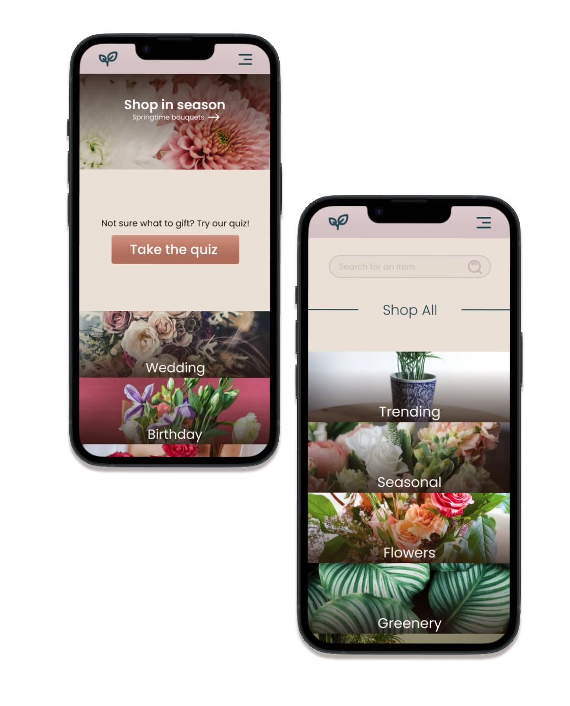
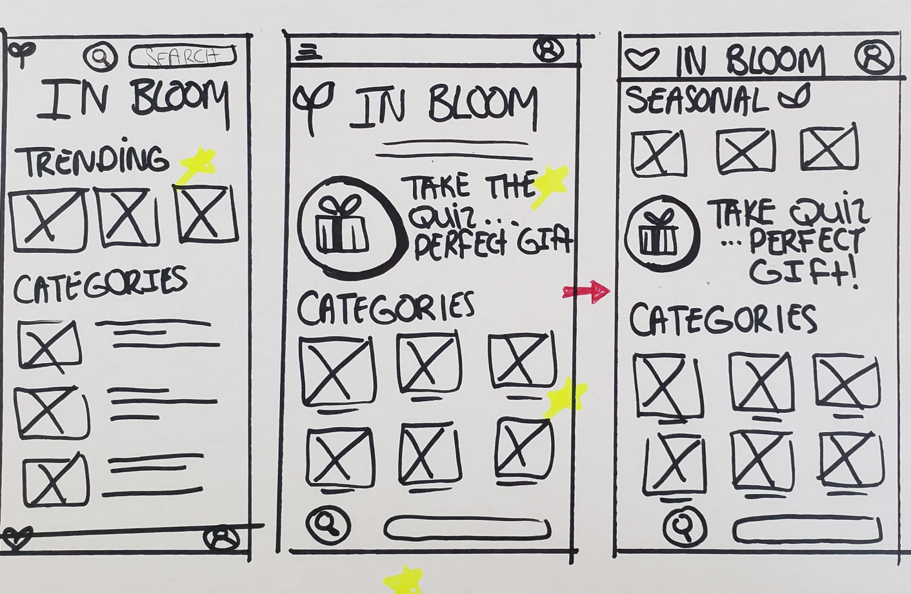
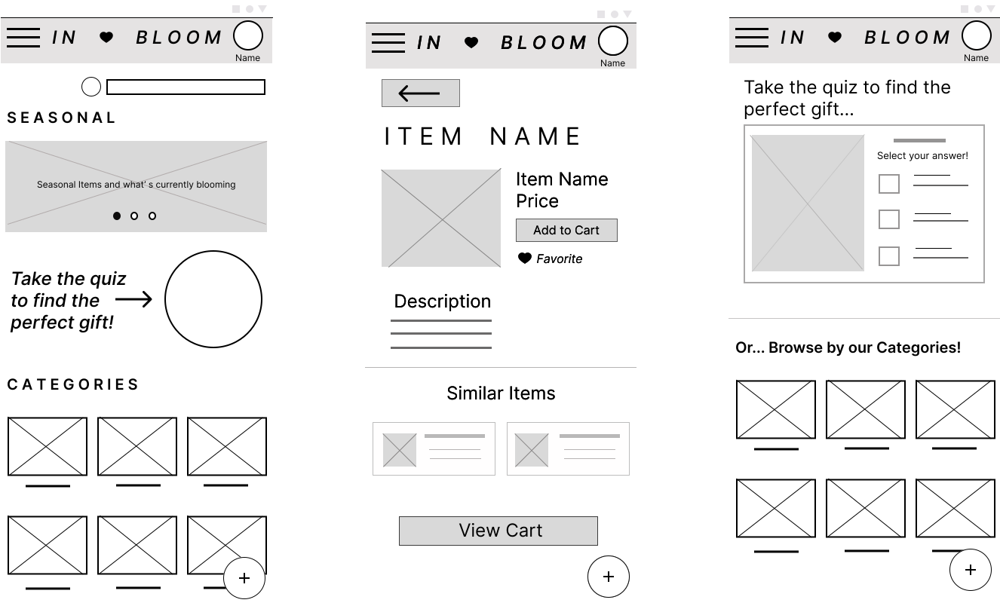
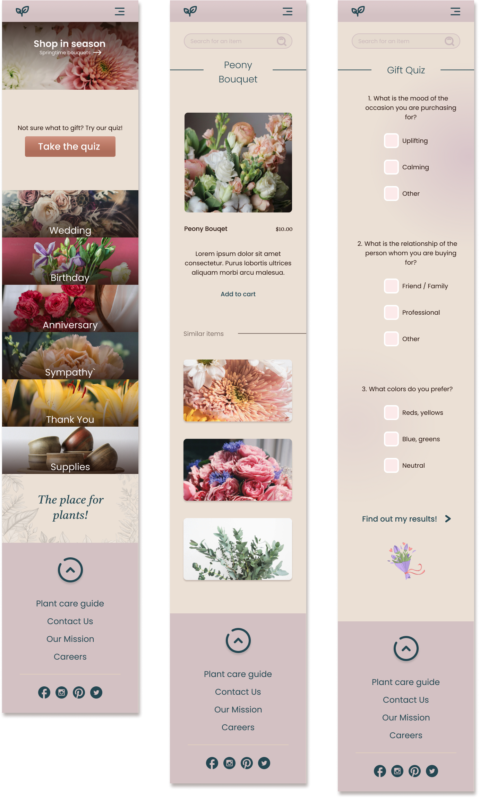

My role and responsibilites
Through the Google UX Design Course, I was responsible for all roles including research, design, writing, and creating the In Bloom app from conception to delivery to stakeholders.

I conducted interviews, created paper and digital
wireframes, low and high-fidelity prototypes, conducted
usability studies, accounted for accessibility, and iterated
on the design. Understanding the user: I had conducted
interviews as well as empathy maps to better understand user
needs. A primary group identified through research was full
time students who also worked part time jobs. This
demographic has very little money, but still want to enjoy
their expressive interests.
In Bloom's customers are not limited to the group mentioned
above. Other users are those who are interested in
cultivating plants, but may have disabilities preventing
them from doing so, or may not have the land in order to
garden.


Designing paper wireframes allowed me to quickly iterate through concepts of what might work for designing the In Bloom app. Here, I was able to work out some concepts that would be comforrtable for the user to explore. Once I established some key features (labeled by yellow stars), I then took the final wireframe to a digital format for further work. For the home screen, I prioritized clear navigation and a 'choice principle' approach to introducing the variety of items offered in our app.

As the design phase progresed, I altered the home screen of
the In Bloom app based on feedback from users and trends
found in user research.
Clear navigation and user interaction was important while
developing this app. Our goal was to make users feel
comfortable and at ease while navigating our products.
By creating a low-fidelity prototype, I was able to strategically layout the features of the app, and make sure each panel is interactive with the user.
The final high-fidelity prototype presented a more intuitive user flow where each button performed a function. The prototype allowed for the user to navigate through a quiz, as well as suggested seraches (i.e. seasonal, wedding, birthday) which also meets user needs for affordable, personalized gifts options.
The final steps involved coding the website and communicating with Lisa, one of the business owners, for deploying the website to the public!
Accessibility
Provided access to users who are vision impaired by adding
text to images and buttons.
Used icons and images to help make navigation more clear and
intuitive.
Used detailed photographs for flowers and items to help all
users better understand the products.
Take Aways
While designing the In Bloom app, I learned how to carry out
wire frames, low fidelity and high fidelity designs, and
gained an in depth understanding of Figma.
I also was able to recognize the significance and importance
of usability studies, research, and iterating on the app's
designs.
Next Steps
If the app were to continue development, a few of the next
steps would include conducting additional rounds of
usability studies to identify if any features of the app
remain unclear to users, and recognize if pain points still
exist.
We would like to add "add-ons" options for users to further
personalize their experience.
Finally, we would like to conduct more user research to
determine if any areas need improvement and / or additional
features that should be added.
The payment system would need to be fully designed prior to
development.
I focused on both desktop and mobile in these mock ups. For a more detailed look, here is the link to my Figma file.